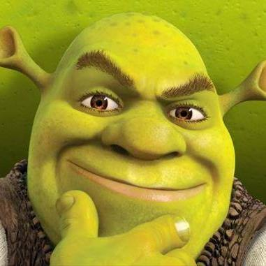

“I can’t believe that anyone disagrees with me” is a worthless argument.
This is true whether it is presented in mockery (lmao check out this loserwho actually says…) or in alleged sorrow (we have degenerated so far that some people fail to be instinctively repulsed by…). Turns out that some people think you’re wrong. Make some kind of point to explain why you’re not, or shut up and go home.
And if you think that you’re entitled to a world in which no one disagrees with you – whatever the topic at issue may happen to be – well, you probably shouldn’t be in the business of making arguments in the first place. People disagree about literally everything. Discourse is how we refine our beliefs, how we pull each other towards the empirical truth and towards compelling suites of values.
…empirically speaking, it is also a blunt tool of shaming, but (a) that’s evil and (b) the odds that you’re actually achieving anything useful by trying to shame someone are pretty low.
I want to be really clear about something: Planned Parenthood has done more to prevent abortion than the pro-life movement ever has.
Yup, preventing abortion by giving abortions. Makes sense!
No you fucking crusty nutsack giving people the education and the tools to not become pregnant in the first fucking place
One of my Christian friends made a Facebook post about how PP gave her tons of resources when she was trying to get pregnant and people were actually genuinely shocked that they provided such resources; they had fully bought into the idea that PP is just an “abortion factory”. The misinformation that’s been spread about PP is unreal.
gosh it’s almost like Planned Parenthood will help you plan for parenthood
If Planned Parenthood will abandon any thought of assisting in abortion, will actively fight against abortion, then this idea would have some substantial basis.
Until that day, this is nothing but a disingenuous smokescreen. You would not accept this attitude from people claiming to fight against nazis or claiming to protect queer youth, and I will not accept it from you.
You would not accept this attitude from people claiming to fight against nazis
I can’t speak for anyone else, but as far as I’m concerned, this is flat untrue. The ACLU – which has actively campaigned, and conducted lawsuits, on behalf of Nazis and their right to do Nazi things – has done far more to check the spread of Nazism, through its contribution to the maintenance of liberal norms, than any number of deplatformers and antifa types ever could.
I really do understand the reflexive hostility here, since the opposing position is often set up as a bad-faith gotcha to “expose” a nonexistent hypocrisy. But the good-faith version of the argument is, in fact, a real argument that demands an answer.
In a society where you don’t control the horizontal and the vertical, is it better to minimize the number of abortions that happen, or to enforce an official dogma that abortion is unacceptable? Because it may be the actual truth of the world that you can have one but not both.
(…or, perhaps, better to eschew either in favor of triumphalist fantasies?)
If you believe that the Lord of Hosts is on your side, it can be hard to work within a paradigm where you don’t control the horizontal and the vertical, and where you really have no viable plan for reaching a point where you do. Yet here we are.
It’s not the Nazis *discourse* that I’m saying people wouldn’t tolerate. It’s the Nazi *actions*.
I don’t think the ACLU has ever argued that when someone is credibly accused of violent felonies like assault and murder, they shouldn’t be rigorously prosecuted. If Nazis were running around beating or killing people en mass, everybody including the ACLU would call for the police to arrest them and bring in the National Guard if needed. And they’d be right.
(Contrast with Antifa using tortured logic to argue that somebody with sorta fashy ideology is exactly the same as somebody pointing a gun at you right now).
I think pretty confidently we could do better than we are currently, and I think that it’s unsupported that this issue should get the exception. The Netherlands have pretty low demand for abortion - and it seems like that could go further if it was also illegal.
…I’m not going to put words in your mouth, but I would be extremely surprised if you were willing to endorse any of the policies or cultural developments that have led to Netherlands-level demand for abortion.
I want to be really clear about something: Planned Parenthood has done more to prevent abortion than the pro-life movement ever has.
Yup, preventing abortion by giving abortions. Makes sense!
No you fucking crusty nutsack giving people the education and the tools to not become pregnant in the first fucking place
One of my Christian friends made a Facebook post about how PP gave her tons of resources when she was trying to get pregnant and people were actually genuinely shocked that they provided such resources; they had fully bought into the idea that PP is just an “abortion factory”. The misinformation that’s been spread about PP is unreal.
gosh it’s almost like Planned Parenthood will help you plan for parenthood
If Planned Parenthood will abandon any thought of assisting in abortion, will actively fight against abortion, then this idea would have some substantial basis.
Until that day, this is nothing but a disingenuous smokescreen. You would not accept this attitude from people claiming to fight against nazis or claiming to protect queer youth, and I will not accept it from you.
You would not accept this attitude from people claiming to fight against nazis
I can’t speak for anyone else, but as far as I’m concerned, this is flat untrue. The ACLU – which has actively campaigned, and conducted lawsuits, on behalf of Nazis and their right to do Nazi things – has done far more to check the spread of Nazism, through its contribution to the maintenance of liberal norms, than any number of deplatformers and antifa types ever could.
I really do understand the reflexive hostility here, since the opposing position is often set up as a bad-faith gotcha to “expose” a nonexistent hypocrisy. But the good-faith version of the argument is, in fact, a real argument that demands an answer.
In a society where you don’t control the horizontal and the vertical, is it better to minimize the number of abortions that happen, or to enforce an official dogma that abortion is unacceptable? Because it may be the actual truth of the world that you can have one but not both.
(…or, perhaps, better to eschew either in favor of triumphalist fantasies?)
If you believe that the Lord of Hosts is on your side, it can be hard to work within a paradigm where you don’t control the horizontal and the vertical, and where you really have no viable plan for reaching a point where you do. Yet here we are.
Man, ppl who object to being called “cis” just straight up confuse me. The existence of a category (even one I’ll defined or that you think doesn’t have much epistemic validity) implies, at least for the sake of discussion, the existence of not-category, which can be helpful if you want to discuss anything related to the original category, or just distinguish specific concepts! Do they object to other oppositional unmarked classifications being applied to them or to other people, like “straight,” or “white,” or “male,” or “adult,” or “healthy,” or “alive”?? Or do they just object to language being an effective vehicle for communication?
The primary people you see objecting to this are just people who reject or at least dislike transgenderism as a thing, and thus are annoyed about a whole other word being created to describe what they prefer to conceptualize as “regular people”. That is, I think they’re more objecting to the use of the term or at least its use in “polite company” rather than to having it applied to them specifically? The fact that it’s a somewhat whimsical term that rarely appears outside of trans discourse probably exacerbates this – notice that mainstream trans-positive statements almost never use the term “cis” because it still has sort of an aura as a “university word”. (I wonder if “heterosexual” had a similar reception originally? I could see it going either way.)
95% of the time it’ll be that, but then there’s also a separate category of objections that criticize “cis” because it’s a conceptual void. That is, “cis” is just the residual bits left over after you define “trans people” so it doesn’t have a lot of coherence in itself. As a result “transness”, being the side with definition and the one that the people who use the terms are interested in, has a tendency to absorb any sort of complex relationship with or understanding of gender, leaving “cis” as a kind of “other of the other” that exists only as a negation of all the stuff people talk about otherwise. This of course is largely a byproduct of the fact that, as I mentioned earlier, “cis” is used exclusively by trans people and trans allies in talking positively about the trans experience and negatively about the cis experience, so in a sense this whole second genre of complaint just boils down to not seeing one’s self in the way one is defined by other factions. And from there hence all the turf wars over control of language.
Some further reasons that people may be inclined to object to the use of “cis” –
That is, “cis” is just the residual bits left over after you define
“trans people” so it doesn’t have a lot of coherence in itself. As a
result “transness”, being the side with definition and the one that the
people who use the terms are interested in, has a tendency to absorb any
sort of complex relationship with or understanding of gender, leaving
“cis” as a kind of “other of the other” that exists only as a negation
of all the stuff people talk about otherwise.
I can’t really say whether this is a problem that anyone has – I’d believe it, I haven’t personally seen it – but there’s a problem that is almost the precise opposite of this. “Cis” may or may not come across as under-specific to some people, but it can sure come across as over-specific.
By which I mean: the construction of ideas like “trans” and “gender,” as they’re used today, have a lot of conceptual infrastructure and scaffolding. There’s a lot of fairly-detailed worldview behind them. This worldview is, trivially, not universal. The easy thing to say on that score is that a lot of Gender Fuckery from other times and places, the stuff that produced two-spirit people and Roman “male brides” and Persian eunuchs etc., did not use remotely the same categories or the same underlying concepts. The harder-but-also-true thing is that a lot of people today, in our own culture, don’t use or like those categories or those underlying concepts.
And while it’s one thing to say “we are a community of people who do conceive of gender in this particular way, it’s important to us, and we are going to put that front and center in our public-facing nomenclature” – it’s quite another to say “our conceptual structure is going to define the nomenclature and the categorization for everyone who isn’t us also.” It’s like…you imagine that goths started using the word “htog” to mean “does not have the goth-nature,” and started making a lot of pronouncements about what htog people are like and what htog-ness really means, and justified this on the grounds that it’s important to be able to talk about things. There’s a clear sense in which this is true, and another clear sense in which htog-ness is not a particularly meaningful category outside one particular human context with an idiosyncratic focus. If someone told me that it was important for me to consider myself htog or to identify myself as htog when accounting for myself to the public, I would be annoyed, and I think justly so.
This ties into a related issue, which is the unfortunate power politics of terminology.
In briefest terms: the liberal West has spent the last sixty years or so being told, over and over again, that it is extremely important for human dignity that groups be able to control their own labels and nomenclature. Being told, by outsiders, “you’re ‘cisgender’ now, the world has decided this for you, your opinions on the matter have not been consulted and are not relevant” – well, at best it’s a reminder of the asymmetries that are baked into certain kinds of identity politics, because more-fashionably-oppressed groups have screamed bloody murder whenever anyone tried to do anything similar to them, and the cultural establishment* has stood behind those complaints. And those asymmetries carry an awful lot of baggage, for obvious reasons.
*to the extent that this is a real thing, but you take my point
And a very minor point that I think comes up seldom, but I have in fact heard it from some older folks: “cis” was in fact once used as a childish euphemism for “urine” (in circumstances where “piss” was too vulgar, comparable to “pee”). If that’s a thing that sticks in your mind, it’s not hard to see why being called something that amounts to “pee-gender” would rankle.
Kung Fu Panda is about realizing your True Power of Selfhood Inside You All Along
GAH FUCKING KUNG FU PANDA DON’T GET ME STARTED ON KUNG FU PANDA
…but I suppose you already have.
Right up until the very end, Kung Fu Panda has a really good instantiation of the classic Hero’s Journey arc that I’ve been talking about. Po is a figure who should be very resonant for a large part of the film’s audience. He idolizes his warrior heroes and knows a lot about them in an obsessive fannish sort of way, but he is hilariously, almost uniquely unqualified to be a warrior hero himself – due to his lack of physical acumen and his lack of disciplined focus.
Then, via serendipity, he gets his chance to try and become the kind of hero that he’s always dreamed of being. And training is a terrible slog that doesn’t work very well, because, again, Po doesn’t have the necessary talents or temperament. But eventually he and his teacher figure out that they can capitalize on his personal peculiarities to turn him into a weird, unconventional, but effective sort of warrior. He has a second training montage and this time it sticks.
So far this is great stuff, in mythic terms and didactic terms. Po has to learn the usual basic Karate Kid suite of lessons: you have to work hard to achieve results, you have to care more about actually getting better than you do about your own ego. Po and Shifu additionally have to learn a further lesson, one with tremendous widespread resonance in our culture: you won’t get very far trying to ape people who aren’t like you, you need to figure out what you’re actually good at and make the most of the particular talents that you have. (A controversial moral in some ways and not always a good one, but it’s a coherent moral conveyed well, up to this point.)
All this is symbolically underscored by the Dragon Scroll, the “ancient mystical artifact of power” that has no content except a reflective surface. The true power was your own inner nature, be true to yourself, yay.
And then, right at the very end, the movie throws it all away. Po, offscreen, somehow “figures out” the secret to the generic awesomesauce Ultimate Kung Fu Technique. No visible effort or learning or revelation goes into it, and it doesn’t in any way reflect Po’s peculiarities, the ones that have defined the entire heroic arc. We’re no longer in the territory of “capitalize on your individual talents” – we’re in Captain Marvel territory of “just be yourself and every awesome thing will come to you as a result.” Suddenly the very notion of accomplishment becomes fake, something that you get handed out of nowhere because the protagonist is supposed to be a badass who gets a happy ending.
Eh. At risk of turning this into Stupid Culture War Shit, I actually don’t buy (2). I think there’s a meaningful difference between the way male heroic protagonists have traditionally been portrayed in fantasy movies versus the way female heroic protagonists have been portrayed in fantasy movies since 2010 or so [where “fantasy movies” definitely includes superhero stuff]; that this discrepancy represents an ongoing cultural problem for certain kinds of narrative, even if it’s probably fine in any given isolated case; and that Carol Danvers is a really good illustration of the issue.
I know I’m not the first person to point this out, or probably even the dozenth, but…
The Hero’s Journey is an ur-story. It works a particular way, it hits particular beats.
[ – and here we have a brief sidebar while the academic folklorist in me insists on shouting: THIS “UR-STORY” IS ONE PARTICULAR CULTURAL ARTIFACT WITH A LOT OF RESONANCE IN CERTAIN CONTEXTS, IT IS NOT MAGIC OR BIOLOGY OR SOMETHING, NOT EVERY SINGLE GODDAMN STORY IS OR SHOULD BE A REGURGITATION OF CAMPBELL – ]
One important thing is that the hero starts weak, in skill and in spirit, so that over the course of his journey we can watch him grow strong. Another important thing is that his strength-in-skill is achieved as an outgrowth of his strength-in-spirit; he learns some important lesson, he acquires discipline or compassion or courage or some other crucial virtue, and in doing so he comes into his power.
I’m not a movie expert by any means, but my impression is that this pattern plays out with really remarkable fidelity in movies about fantastic hero-figures, especially in heroic origin stories. Luke Skywalker is a whiny cowardly putz who needs to learn to trust the Force before he can be a Jedi. Peter Parker needs to learn that with great power comes great responsibility before he can be a real superhero. Tony Stark needs to learn to care about others. Bruce Wayne has a dark version where he learns the “virtue” of vengeful obsession. Aladdin needs to learn to put virtuous action ahead of his selfish desires. Simba needs to learn to face his fears rather than losing himself in hakuna-matata. Even Steve Rogers, who is in some ways kinda morally perfect from the get-go, needs to learn to stand up for what he believes in rather than allowing himself to be used as a pawn by impersonal forces.
One particular very-narrow instantiation of this pattern is “the hero learns to ignore the haters and believe in himself.” That works, kinda, as a literary Sometimes Food. It has the inherent problem that it tends to sound an awful lot like “the hero just needs to realize that he’s inherently awesome the way he is, and that he doesn’t need to learn anything or cultivate any virtue” – which sort of borks up the underlying themes, and is not a super-compelling moral from a mythic standpoint. I actually can’t think of any culturally-central examples of this particular version playing out with a [male] hero. But I’m sure they’re out there.
With heroines, these days, it’s something you see over and over and over. It’s Rey, it’s Moana, it’s Wonder Woman, and it’s certainly Captain Marvel.
And, yeah, this didn’t happen in a vacuum. Going into this particular cultural moment, there may have been a surfeit of stories about women being torn apart for their character flaws – I was around in the late ‘80s and the ‘90s, I remember all the “career bitch learns to have a heart and care about people” shit – and a dearth of distaff-side power-fantasy confidence. But right now, just as we’re finally seeing the convergence of “lots of awesome culturally-central heroic fantasy stories” and “lots of stuff being made specifically for and about women,” basically every version of the actual Hero’s Journey is being drowned under a thick layer of Yass Queen Slay.
As I understand it, the proper way to round out a rant like this is to make an appeal about The Children. So, sure. The little girls for whom these films are being made, the ones who for the first time are supposed to be learning to see themselves as true heroes, are being fed a mythic diet consisting of nothing but spun sugar. This is neither appetizing, in anything more than the very shortest term, nor beneficial.
One particular very-narrow instantiation of this pattern is “the hero learns to ignore the haters and believe in himself.” That works, kinda, as a literary Sometimes Food. It has the inherent problem that it tends to sound an awful lot like “the hero just needs to realize that he’s inherently awesome the way he is, and that he doesn’t need to learn anything or cultivate any virtue” – which sort of borks up the underlying themes, and is not a super-compelling moral from a mythic standpoint. I actually can’t think of any culturally-central examples of this particular version playing out with a [male] hero.
Hmmm, let’s think…

Other examples include Batman, Superman, Judge Dredd, or Sherlock Holmes.
I’m not sure all your examples up there are actually the same thing. Luke Skywalker doesn’t simply change throughout the movies, we watch him acquire a certain set of Rebel and Jedi skills. He starts at the beginning of Star Wars as a farm boy with no experience in fighting, organizing people, using Jedi powers, swinging a lightsaber, etc, and he slowly acquires and improves those skills throughout the three movies.
We don’t watch Tony Stark start out as a mediocre inventor and then slowly work his way to being a great one at the end of Iron Man 3; He’s already a super confident genius at the beginning of the film. We never see batman go through the “try to stop the bad guy while wearing hockey pads” stage of his career; we see a moment of vulnerability as a child and then immediately cut to him when he’s Batman. Even in Batman Begins he’s 90% of the way there when he goes to see Ras Al Ghul at the beginning of the movie. By the beginning of The Dark Knight The Joker is the underdog.
I don’t think I have ever seen an adaptation of Sherlock Holmes that went, “But what was he like when he was a clumsy beginner detective who made a lot of detecting mistakes?”
These characters have to grow, in some sense, but because they either face an obstacle which itself is so immense that even their own great skill is stymied (e.g. Batman might be a superhero, but can even he beat a genius criminal like The Joker? Can the great Sherlock Holmes beat the Napoleon of Crime?) or because they face a problem which is outside their skill set. (Superman can crush coal into diamonds with his bare hands but boy that Lois Lane sure is a handful!)
So the first thing worth saying here is that not all these stories are Hero’s Journey reiterations even in the broadest and most generous sense. Sherlock Holmes definitely isn’t; he is not the Hero With a Thousand Faces, that’s not what he’s about and never has been; and that’s fine. His stories aren’t even about his development as a character at all. I’m pretty sure the same goes for Judge Dredd, although I confess that I’m not really familiar with him as an actual character rather than a meme.
Beyond that…this is an overly-narrow reading of the “coming into your power” concept. It’s true that Iron Man’s literal “power” is “being really smart and good with technology,” and he is that thing from the very beginning, but…the Iron Man origin story definitely starts with “Tony Stark is a man who can’t really deal with his problems,” ends with “Tony Stark is an effective hero,” and the narrative sets things up such that getting from A to B involves learning an important moral lesson. The whole point of the [since-1980-or-so] interpretation of Batman is that we go directly from “criminals are a cowardly and superstitious lot, I shall become a bat” to terrifyingly effective crime-fighting; Bruce underwent a spiritual development in the vein of “I will sacrifice my humanity to be an avatar of fearful justice and avenge my parents,” and it worked, like black magic. We tend to skip over the training sequences with him precisely because they don’t underlie the moral narrative.
I’m not sure whether you can really call Shrek an instantiation of the Hero With a Thousand Faces, but to the extent that you can, he sure does need to learn important moral lessons about friendship and teamwork and love before he can be effectively heroic.
Superman is a super-weird edge case in a variety of ways.
I mean, I feel like this raises the question of why, then, we’d assume the films you’re talking about are, in fact, failed attempts at The Hero’s Journey rather than successful attempts at whatever kind of story Superman is, or successful attempts at something else altogether.
I’ve not yet read Campbell’s book, but I’ve always been really skeptical of the thing because it seems to me, as a layman, that in looking for similarities between stories it often draws the lines in arbitrary places.
Like,
The whole point of the [since-1980-or-so] interpretation of Batman is that we go directly from “criminals are a cowardly and superstitious lot, I shall become a bat” to terrifyingly effective crime-fighting; Bruce underwent a spiritual development in the vein of “I will sacrifice my humanity to be an avatar of fearful justice and avenge my parents,” and it worked, like black magic. We tend to skip over the training sequences with him precisely because they don’t underlie the moral narrative.
I mean… we don’t skip over any of that stuff with Luke Skywalker; by the end of A New Hope he’s nowhere near where Batman is in the first 15 minutes of every Batman movie. Arguably, he goes through four movies worth of stuff and then dies without reaching the point Batman is at at the beginning of every Batman movie. We watch Luke for several movies worth of stuff that every Batman movie has just glossed over. I don’t think that’s actually a trivial difference.
I’m at kind of a disadvantage from not having seen a lot of these movies other than Star Wars, but I think if they cause discomfort it’s for reasons outside of their structure.
First of all, we all now know that our opinions on these movies will be used as a bludgeon against us by assholes with axes to grind. “I thought Rey was kind of bland and dull” “You know why, right? It’s because you’re a sexist”; “I really liked Rose!” “Typical SJW!”
That’s never fun, and the anticipation of the work that will go into trying to express an honest opinion on these movies that won’t be used as evidence against us already causes stress.
Second, there’s something I can’t quite express, it’s something to do with branding and propaganda.
Okay, like, in The Force Awakens and The Last Jedi, JJ Abrams and Rian Johnson make the Nazi overtones of the bad guys even more obvious while simultaneously making the bad guys more laughable and pathetic then they have ever been. Kylo Ren is portrayed as a scared child who has given up on himself and Hux is a puffed up little gerbil who angrily insists on his own grandiosity even thought literally nobody, including the other First Order characters actually respects or even really fears him. Darth Vader was incredibly cool and Emperor Palpatine was scarily competent and in control, but the new movies do everything to undercut their villains. Except Snoke, I guess, but Snoke is a big yawn.
And there’s something Captain Planet-esque about the whole thing. And what I mean is, remember Captain Planet? That show from the early 90s where the earth spirit, Gaia, summons five teenagers with attitude to wield magic rings to create Captain Planet, a superhero who fights pollution, and also villains who pollute, like Hoggish Greedly, a literal pig man who seems to pollute for its own sake, like it’s his calling or something.
And one of the kids was this guy named Wheeler, who came from the US, and he was the one who was always wrong. He was a loud-mouthed street tough who grew up in tough circumstances and used false bravado to cover his insecurities, but had to learn and change because he was suddenly encountering a wider world then the one he grew up in.
And from a storytelling structure perspective, that’s a perfectly viable, even compelling character, but he was so damn obnoxious when you were a kid watching that cartoon, because you could see the gears. He was the way he was because they needed somebody to be wrong so that the other characters could exposit the correct opinions, and as you get older you realize that the guy who was always wrong and kind of too aggressive and needed to be patiently taught by the more mature types, well, he couldn’t be the black African guy or the South American guy, because yikes, and nobody was thinking outside the box enough to make the Asian chick a streetwise tough.
And there’s a sort of similar, “Of course in the teens we have to portray Nazis as pathetic man-children who are going to be schooled by the tough, unbreakable real strength of women and minorities.”
And what I have trouble expressing is that it’s not that that’s a bad message or that it’s insincere, it’s that you can see the gears turning. It’s that there’s a strong undercurrent of “It had to be structured this way, because other ways of doing it would be too conservative or too bizarre for the audience that we’re trying to cultivate for the Star Wars brand.”
Or it’s like that famous and staggeringly inane Coke ad:
In retrospect everybody in this ad looks like they’re in a cult, but I assume this wasn’t made by war profiteers or Klingons or anything, I’m sure they’re at least vaguely in favor of world peace and harmony and love and shit.
And maybe we’ve all been moved by something equally as maudlin or blunt.
But not by this, because it’s selling us fucking Coca Cola.
Blockbuster movies are really strongly branded right now. Everybody wants an MCU and so nerd movies often feel like advertisements for themselves and their own sequels, and in that context it’s hard not to see this kind of female empowerment as a kind of woke branding. It’s not that it’s bad, it’s that even as you watch the movies you can hear the marketing team talk about how this is the kind of message that resonates with key demographics.
Anyway, Judge Dredd is a really good comic series and you should read it.
Mrmph. Whatever else may be true – the thing at which you’re gesturing, with the gears turning etc., is certainly a real thing. It’s come close to ruining my ability to enjoy modern fantasy novels, even when they’re making narrative moves that are totally legit (narrative moves that I would have found actively delightful and inspiring a decade ago!), a fact that causes me no end of bitterness and angst.
I still think that something important about story structure is also going on, though. Or, rather, something important about story concepting.
Like…yes, you’re correct, in many important ways Batman stories don’t fit the model. Superhero stories in general deviate from the model a lot, because they don’t rise and fall in a normal narrative arc, they just keep going and going and going in an endless sprawl so that the superhero can have an endless career and fight a million villains. Insofar as they do have the Campbell-nature, it tends to be compressed right near the beginning, when we see the heroic origin play out.
Because, if the Hero’s Journey is “about” any single thing, it’s about exploring what it takes to become a hero.
Because it’s an ur-metaphor. The hero of the Hero’s Journey is always you. His trials are representations of the obstacles in your life. His powers are representations of the tools you can use to be effective in the world. This is folklore psychology at its very most stripped-down.
(Sherlock Holmes isn’t you and never was – even if many actual individuals reading this probably have a lot more in common with him than with, say, Luke Skywalker. Same goes for James Bond. When you read about them or watch them on the screen, the point isn’t to feel any kind of resonance, it isn’t to see your own internal struggles reinterpreted in mythic form, it’s to watch a bizarrely competent person doing his thing. But the comics are there to remind you that you, yes you, could be Batman. Y’know. If everything lined up right. And even as things are, it’s not hard to see how the Batman identity is a stand-in for a certain way of being in the world…)
The core lesson of that ur-story is often something like “if you learn the right lesson or acquire the right tool, you can be awesome.” If you get over your unwillingness to commit. If you become disciplined and study kung fu. Etc. And it turns out that, gosh!, it’s actually true. Very often you can do things effectively, if you think about it in the heroic mode, if you set yourself to mastering your internal demons and building the skills that you’ll need.
The story that is “you can be awesome if you just unleash your preexisting inner awesomeness” is…less often true. It rings hollow, a lot of the time.
If the ur-metaphor is “the hero is you”, I submit that “you could be awesome, but you live in a society that exploits you by lying to you about your capabilities” is a narrative that rings true for a lot of women, and is exactly the narrative of the Captain Marvel film.
Maybe, maybe. Sometimes. There are certainly women out there who have all the talents and skills that they need to be awesome in the particular way that matters most to them, and who are kept back from True Ultimate Fulfillment only by the manipulations of a sexist society.
But in fact this is pretty rare, right? If only because having all the talents and skills that you need to be awesome in the particular way that matters most to you is pretty rare, period, even for straight white cis abled athletic gender-conforming good-looking high-IQ men, even if there’s no sexism (or whatever) holding you back. Self-actualization is super hard, man! It’s the work of a lifetime! That’s why we need all these Hero’s Journey stories!
To be a hero, you have to develop your abilities, cultivate virtue, conquer your demons, etc. etc. There’s no way around that. Sexism (or racism etc.) can make this process even harder – it can push you into wasting your precious time and energy on stupid shit in order to fill a mandatory social role that you don’t even like, it can cause potential mentor figures to ignore you or fear you instead of helping you, it can deny you development opportunities that other people get, on and on and on. All this is an extra layer of difficulty. It’s not a replacement for the original baked-in difficulty. That is, in large part, what makes it so unfair and awful.
Or, put in cruelly pithy terms: What you get, when you’ve defeated the devils of the patriarchy, is the chance to operate on the same level as that mediocre white man whom you hate so much. Everything beyond that takes further work.
Stories are important. For ages, men have learned how to be “heroes” in their own lives by imprinting on heroic narratives. It’s a crucial tool.
Women deserve to have that tool too. Hell, let’s put it in the language of representation – little girls should get the chance to see themselves in the journey from whiny coward Luke Skywalker to messianic Jedi Luke Skywalker, from scared little Bruce Wayne to omnicompetent mad avenger Batman.
It is cruel and wrong to give them a culture full of stories Just For Them that say “all you need is to Believe in Yourself and you’ll be a great hero.” In most circumstances that is not all you need. In small doses it’s fine; as a universal, it’s a recipe for imposter syndrome, lack-of-agency anomie, and self-loathing.
Eh. At risk of turning this into Stupid Culture War Shit, I actually don’t buy (2). I think there’s a meaningful difference between the way male heroic protagonists have traditionally been portrayed in fantasy movies versus the way female heroic protagonists have been portrayed in fantasy movies since 2010 or so [where “fantasy movies” definitely includes superhero stuff]; that this discrepancy represents an ongoing cultural problem for certain kinds of narrative, even if it’s probably fine in any given isolated case; and that Carol Danvers is a really good illustration of the issue.
I know I’m not the first person to point this out, or probably even the dozenth, but…
The Hero’s Journey is an ur-story. It works a particular way, it hits particular beats.
[ – and here we have a brief sidebar while the academic folklorist in me insists on shouting: THIS “UR-STORY” IS ONE PARTICULAR CULTURAL ARTIFACT WITH A LOT OF RESONANCE IN CERTAIN CONTEXTS, IT IS NOT MAGIC OR BIOLOGY OR SOMETHING, NOT EVERY SINGLE GODDAMN STORY IS OR SHOULD BE A REGURGITATION OF CAMPBELL – ]
One important thing is that the hero starts weak, in skill and in spirit, so that over the course of his journey we can watch him grow strong. Another important thing is that his strength-in-skill is achieved as an outgrowth of his strength-in-spirit; he learns some important lesson, he acquires discipline or compassion or courage or some other crucial virtue, and in doing so he comes into his power.
I’m not a movie expert by any means, but my impression is that this pattern plays out with really remarkable fidelity in movies about fantastic hero-figures, especially in heroic origin stories. Luke Skywalker is a whiny cowardly putz who needs to learn to trust the Force before he can be a Jedi. Peter Parker needs to learn that with great power comes great responsibility before he can be a real superhero. Tony Stark needs to learn to care about others. Bruce Wayne has a dark version where he learns the “virtue” of vengeful obsession. Aladdin needs to learn to put virtuous action ahead of his selfish desires. Simba needs to learn to face his fears rather than losing himself in hakuna-matata. Even Steve Rogers, who is in some ways kinda morally perfect from the get-go, needs to learn to stand up for what he believes in rather than allowing himself to be used as a pawn by impersonal forces.
One particular very-narrow instantiation of this pattern is “the hero learns to ignore the haters and believe in himself.” That works, kinda, as a literary Sometimes Food. It has the inherent problem that it tends to sound an awful lot like “the hero just needs to realize that he’s inherently awesome the way he is, and that he doesn’t need to learn anything or cultivate any virtue” – which sort of borks up the underlying themes, and is not a super-compelling moral from a mythic standpoint. I actually can’t think of any culturally-central examples of this particular version playing out with a [male] hero. But I’m sure they’re out there.
With heroines, these days, it’s something you see over and over and over. It’s Rey, it’s Moana, it’s Wonder Woman, and it’s certainly Captain Marvel.
And, yeah, this didn’t happen in a vacuum. Going into this particular cultural moment, there may have been a surfeit of stories about women being torn apart for their character flaws – I was around in the late ‘80s and the ‘90s, I remember all the “career bitch learns to have a heart and care about people” shit – and a dearth of distaff-side power-fantasy confidence. But right now, just as we’re finally seeing the convergence of “lots of awesome culturally-central heroic fantasy stories” and “lots of stuff being made specifically for and about women,” basically every version of the actual Hero’s Journey is being drowned under a thick layer of Yass Queen Slay.
As I understand it, the proper way to round out a rant like this is to make an appeal about The Children. So, sure. The little girls for whom these films are being made, the ones who for the first time are supposed to be learning to see themselves as true heroes, are being fed a mythic diet consisting of nothing but spun sugar. This is neither appetizing, in anything more than the very shortest term, nor beneficial.
One particular very-narrow instantiation of this pattern is “the hero learns to ignore the haters and believe in himself.” That works, kinda, as a literary Sometimes Food. It has the inherent problem that it tends to sound an awful lot like “the hero just needs to realize that he’s inherently awesome the way he is, and that he doesn’t need to learn anything or cultivate any virtue” – which sort of borks up the underlying themes, and is not a super-compelling moral from a mythic standpoint. I actually can’t think of any culturally-central examples of this particular version playing out with a [male] hero.
Hmmm, let’s think…
Other examples include Batman, Superman, Judge Dredd, or Sherlock Holmes.
I’m not sure all your examples up there are actually the same thing. Luke Skywalker doesn’t simply change throughout the movies, we watch him acquire a certain set of Rebel and Jedi skills. He starts at the beginning of Star Wars as a farm boy with no experience in fighting, organizing people, using Jedi powers, swinging a lightsaber, etc, and he slowly acquires and improves those skills throughout the three movies.
We don’t watch Tony Stark start out as a mediocre inventor and then slowly work his way to being a great one at the end of Iron Man 3; He’s already a super confident genius at the beginning of the film. We never see batman go through the “try to stop the bad guy while wearing hockey pads” stage of his career; we see a moment of vulnerability as a child and then immediately cut to him when he’s Batman. Even in Batman Begins he’s 90% of the way there when he goes to see Ras Al Ghul at the beginning of the movie. By the beginning of The Dark Knight The Joker is the underdog.
I don’t think I have ever seen an adaptation of Sherlock Holmes that went, “But what was he like when he was a clumsy beginner detective who made a lot of detecting mistakes?”
These characters have to grow, in some sense, but because they either face an obstacle which itself is so immense that even their own great skill is stymied (e.g. Batman might be a superhero, but can even he beat a genius criminal like The Joker? Can the great Sherlock Holmes beat the Napoleon of Crime?) or because they face a problem which is outside their skill set. (Superman can crush coal into diamonds with his bare hands but boy that Lois Lane sure is a handful!)
So the first thing worth saying here is that not all these stories are Hero’s Journey reiterations even in the broadest and most generous sense. Sherlock Holmes definitely isn’t; he is not the Hero With a Thousand Faces, that’s not what he’s about and never has been; and that’s fine. His stories aren’t even about his development as a character at all. I’m pretty sure the same goes for Judge Dredd, although I confess that I’m not really familiar with him as an actual character rather than a meme.
Beyond that…this is an overly-narrow reading of the “coming into your power” concept. It’s true that Iron Man’s literal “power” is “being really smart and good with technology,” and he is that thing from the very beginning, but…the Iron Man origin story definitely starts with “Tony Stark is a man who can’t really deal with his problems,” ends with “Tony Stark is an effective hero,” and the narrative sets things up such that getting from A to B involves learning an important moral lesson. The whole point of the [since-1980-or-so] interpretation of Batman is that we go directly from “criminals are a cowardly and superstitious lot, I shall become a bat” to terrifyingly effective crime-fighting; Bruce underwent a spiritual development in the vein of “I will sacrifice my humanity to be an avatar of fearful justice and avenge my parents,” and it worked, like black magic. We tend to skip over the training sequences with him precisely because they don’t underlie the moral narrative.
I’m not sure whether you can really call Shrek an instantiation of the Hero With a Thousand Faces, but to the extent that you can, he sure does need to learn important moral lessons about friendship and teamwork and love before he can be effectively heroic.
Superman is a super-weird edge case in a variety of ways.
I mean, I feel like this raises the question of why, then, we’d assume the films you’re talking about are, in fact, failed attempts at The Hero’s Journey rather than successful attempts at whatever kind of story Superman is, or successful attempts at something else altogether.
I’ve not yet read Campbell’s book, but I’ve always been really skeptical of the thing because it seems to me, as a layman, that in looking for similarities between stories it often draws the lines in arbitrary places.
Like,
The whole point of the [since-1980-or-so] interpretation of Batman is that we go directly from “criminals are a cowardly and superstitious lot, I shall become a bat” to terrifyingly effective crime-fighting; Bruce underwent a spiritual development in the vein of “I will sacrifice my humanity to be an avatar of fearful justice and avenge my parents,” and it worked, like black magic. We tend to skip over the training sequences with him precisely because they don’t underlie the moral narrative.
I mean… we don’t skip over any of that stuff with Luke Skywalker; by the end of A New Hope he’s nowhere near where Batman is in the first 15 minutes of every Batman movie. Arguably, he goes through four movies worth of stuff and then dies without reaching the point Batman is at at the beginning of every Batman movie. We watch Luke for several movies worth of stuff that every Batman movie has just glossed over. I don’t think that’s actually a trivial difference.
I’m at kind of a disadvantage from not having seen a lot of these movies other than Star Wars, but I think if they cause discomfort it’s for reasons outside of their structure.
First of all, we all now know that our opinions on these movies will be used as a bludgeon against us by assholes with axes to grind. “I thought Rey was kind of bland and dull” “You know why, right? It’s because you’re a sexist”; “I really liked Rose!” “Typical SJW!”
That’s never fun, and the anticipation of the work that will go into trying to express an honest opinion on these movies that won’t be used as evidence against us already causes stress.
Second, there’s something I can’t quite express, it’s something to do with branding and propaganda.
Okay, like, in The Force Awakens and The Last Jedi, JJ Abrams and Rian Johnson make the Nazi overtones of the bad guys even more obvious while simultaneously making the bad guys more laughable and pathetic then they have ever been. Kylo Ren is portrayed as a scared child who has given up on himself and Hux is a puffed up little gerbil who angrily insists on his own grandiosity even thought literally nobody, including the other First Order characters actually respects or even really fears him. Darth Vader was incredibly cool and Emperor Palpatine was scarily competent and in control, but the new movies do everything to undercut their villains. Except Snoke, I guess, but Snoke is a big yawn.
And there’s something Captain Planet-esque about the whole thing. And what I mean is, remember Captain Planet? That show from the early 90s where the earth spirit, Gaia, summons five teenagers with attitude to wield magic rings to create Captain Planet, a superhero who fights pollution, and also villains who pollute, like Hoggish Greedly, a literal pig man who seems to pollute for its own sake, like it’s his calling or something.
And one of the kids was this guy named Wheeler, who came from the US, and he was the one who was always wrong. He was a loud-mouthed street tough who grew up in tough circumstances and used false bravado to cover his insecurities, but had to learn and change because he was suddenly encountering a wider world then the one he grew up in.
And from a storytelling structure perspective, that’s a perfectly viable, even compelling character, but he was so damn obnoxious when you were a kid watching that cartoon, because you could see the gears. He was the way he was because they needed somebody to be wrong so that the other characters could exposit the correct opinions, and as you get older you realize that the guy who was always wrong and kind of too aggressive and needed to be patiently taught by the more mature types, well, he couldn’t be the black African guy or the South American guy, because yikes, and nobody was thinking outside the box enough to make the Asian chick a streetwise tough.
And there’s a sort of similar, “Of course in the teens we have to portray Nazis as pathetic man-children who are going to be schooled by the tough, unbreakable real strength of women and minorities.”
And what I have trouble expressing is that it’s not that that’s a bad message or that it’s insincere, it’s that you can see the gears turning. It’s that there’s a strong undercurrent of “It had to be structured this way, because other ways of doing it would be too conservative or too bizarre for the audience that we’re trying to cultivate for the Star Wars brand.”
Or it’s like that famous and staggeringly inane Coke ad:
In retrospect everybody in this ad looks like they’re in a cult, but I assume this wasn’t made by war profiteers or Klingons or anything, I’m sure they’re at least vaguely in favor of world peace and harmony and love and shit.
And maybe we’ve all been moved by something equally as maudlin or blunt.
But not by this, because it’s selling us fucking Coca Cola.
Blockbuster movies are really strongly branded right now. Everybody wants an MCU and so nerd movies often feel like advertisements for themselves and their own sequels, and in that context it’s hard not to see this kind of female empowerment as a kind of woke branding. It’s not that it’s bad, it’s that even as you watch the movies you can hear the marketing team talk about how this is the kind of message that resonates with key demographics.
Anyway, Judge Dredd is a really good comic series and you should read it.
Mrmph. Whatever else may be true – the thing at which you’re gesturing, with the gears turning etc., is certainly a real thing. It’s come close to ruining my ability to enjoy modern fantasy novels, even when they’re making narrative moves that are totally legit (narrative moves that I would have found actively delightful and inspiring a decade ago!), a fact that causes me no end of bitterness and angst.
I still think that something important about story structure is also going on, though. Or, rather, something important about story concepting.
Like…yes, you’re correct, in many important ways Batman stories don’t fit the model. Superhero stories in general deviate from the model a lot, because they don’t rise and fall in a normal narrative arc, they just keep going and going and going in an endless sprawl so that the superhero can have an endless career and fight a million villains. Insofar as they do have the Campbell-nature, it tends to be compressed right near the beginning, when we see the heroic origin play out.
Because, if the Hero’s Journey is “about” any single thing, it’s about exploring what it takes to become a hero.
Because it’s an ur-metaphor. The hero of the Hero’s Journey is always you. His trials are representations of the obstacles in your life. His powers are representations of the tools you can use to be effective in the world. This is folklore psychology at its very most stripped-down.
(Sherlock Holmes isn’t you and never was – even if many actual individuals reading this probably have a lot more in common with him than with, say, Luke Skywalker. Same goes for James Bond. When you read about them or watch them on the screen, the point isn’t to feel any kind of resonance, it isn’t to see your own internal struggles reinterpreted in mythic form, it’s to watch a bizarrely competent person doing his thing. But the comics are there to remind you that you, yes you, could be Batman. Y’know. If everything lined up right. And even as things are, it’s not hard to see how the Batman identity is a stand-in for a certain way of being in the world…)
The core lesson of that ur-story is often something like “if you learn the right lesson or acquire the right tool, you can be awesome.” If you get over your unwillingness to commit. If you become disciplined and study kung fu. Etc. And it turns out that, gosh!, it’s actually true. Very often you can do things effectively, if you think about it in the heroic mode, if you set yourself to mastering your internal demons and building the skills that you’ll need.
The story that is “you can be awesome if you just unleash your preexisting inner awesomeness” is…less often true. It rings hollow, a lot of the time.
The Ninth Spirit in this Order is PAIMON, a Great King, and very obedient unto LUCIFER. He appeareth in the form of a Man sitting upon a Dromedary with a Crown most glorious upon his head. There goeth before him also a Host of Spirits, like Men with Trumpets and well-sounding Cymbals, and all other sorts of Musical Instruments. He hath a great Voice, and roareth at his first coming, and his speech is such that the Magician cannot well understand unless he can compel him. This Spirit can teach
The Ninth Spirit in this Order is PAIMON, a Great King, and very obedient unto LUCIFER. He appeareth in the form of a Man sitting upon a Dromedary with a Crown most glorious upon his head. There goeth before him also a Host of Spirits, like Men with Trumpets and well-sounding Cymbals, and all other sorts of Musical Instruments. He hath a great Voice, and roareth at his first coming, and his speech is such that the Magician cannot well understand unless he can compel him. This Spirit can teach them all good works, and will not teach them anything contrary to those things which PAIMON has said.“ (LUCIFER.)
PAIMON GATHERED
“HE is in the midst of all this, in the midst of all that hath, and has taken his place at the head of all power, and has been all that he hath, and has kept, and every good work which he hath done in this body, which he hath made of all things, the Lord his God in perfect order, the Lord God of all things, and all things that is in his presence. This Spirit haveeth no power to do any good. PAIMON’s head is a Dromedary, and LUCIFER is in that House. "BEWARE” The other two Lords, PAIMON, and LUCIFER, and LUCIFER’s Wife, were sitting there with their Heads in the Peaceable House. PAIMON asked them all what he had heard. LUCIFER answered : “This is true, and true of the Lord as well as of man; this is why he hath kept not those things which he hath put in to make good, but made them into things which are good that are good …” (KJV and Tracts.) For LUCIFER said that he had done what PAIMON had said, and that he and PAIMON could do no good, but did what he had to do for the Lord. For LUCIFER’s head and the Head of the Priesthood were in the Peaceable House. He said that LUCIFER would not do anything evil because of the presence of another King like LUCIFER. And PAIMON said that PAIMON has a great Voice of his own, and he, and PABLO of this House, are good.
I am pleased to see you all with the Holy One in your House, and with all the Saints in your House, so please God that I may say to you this: As a man of my heart, I love you because of your steadfastness and goodness, in whom I have a great voice with your Lord Jesus Christ, in that I have received his help by my soul that we may all keep our heads in the Peaceable House, where our Lord Jesus Christ came, in the midst of all the Saints and their Saints.“ (KJV, Talmuds of the Temple, H.L., vol
Eh. At risk of turning this into Stupid Culture War Shit, I actually don’t buy (2). I think there’s a meaningful difference between the way male heroic protagonists have traditionally been portrayed in fantasy movies versus the way female heroic protagonists have been portrayed in fantasy movies since 2010 or so [where “fantasy movies” definitely includes superhero stuff]; that this discrepancy represents an ongoing cultural problem for certain kinds of narrative, even if it’s probably fine in any given isolated case; and that Carol Danvers is a really good illustration of the issue.
I know I’m not the first person to point this out, or probably even the dozenth, but…
The Hero’s Journey is an ur-story. It works a particular way, it hits particular beats.
[ – and here we have a brief sidebar while the academic folklorist in me insists on shouting: THIS “UR-STORY” IS ONE PARTICULAR CULTURAL ARTIFACT WITH A LOT OF RESONANCE IN CERTAIN CONTEXTS, IT IS NOT MAGIC OR BIOLOGY OR SOMETHING, NOT EVERY SINGLE GODDAMN STORY IS OR SHOULD BE A REGURGITATION OF CAMPBELL – ]
One important thing is that the hero starts weak, in skill and in spirit, so that over the course of his journey we can watch him grow strong. Another important thing is that his strength-in-skill is achieved as an outgrowth of his strength-in-spirit; he learns some important lesson, he acquires discipline or compassion or courage or some other crucial virtue, and in doing so he comes into his power.
I’m not a movie expert by any means, but my impression is that this pattern plays out with really remarkable fidelity in movies about fantastic hero-figures, especially in heroic origin stories. Luke Skywalker is a whiny cowardly putz who needs to learn to trust the Force before he can be a Jedi. Peter Parker needs to learn that with great power comes great responsibility before he can be a real superhero. Tony Stark needs to learn to care about others. Bruce Wayne has a dark version where he learns the “virtue” of vengeful obsession. Aladdin needs to learn to put virtuous action ahead of his selfish desires. Simba needs to learn to face his fears rather than losing himself in hakuna-matata. Even Steve Rogers, who is in some ways kinda morally perfect from the get-go, needs to learn to stand up for what he believes in rather than allowing himself to be used as a pawn by impersonal forces.
One particular very-narrow instantiation of this pattern is “the hero learns to ignore the haters and believe in himself.” That works, kinda, as a literary Sometimes Food. It has the inherent problem that it tends to sound an awful lot like “the hero just needs to realize that he’s inherently awesome the way he is, and that he doesn’t need to learn anything or cultivate any virtue” – which sort of borks up the underlying themes, and is not a super-compelling moral from a mythic standpoint. I actually can’t think of any culturally-central examples of this particular version playing out with a [male] hero. But I’m sure they’re out there.
With heroines, these days, it’s something you see over and over and over. It’s Rey, it’s Moana, it’s Wonder Woman, and it’s certainly Captain Marvel.
And, yeah, this didn’t happen in a vacuum. Going into this particular cultural moment, there may have been a surfeit of stories about women being torn apart for their character flaws – I was around in the late ‘80s and the ‘90s, I remember all the “career bitch learns to have a heart and care about people” shit – and a dearth of distaff-side power-fantasy confidence. But right now, just as we’re finally seeing the convergence of “lots of awesome culturally-central heroic fantasy stories” and “lots of stuff being made specifically for and about women,” basically every version of the actual Hero’s Journey is being drowned under a thick layer of Yass Queen Slay.
As I understand it, the proper way to round out a rant like this is to make an appeal about The Children. So, sure. The little girls for whom these films are being made, the ones who for the first time are supposed to be learning to see themselves as true heroes, are being fed a mythic diet consisting of nothing but spun sugar. This is neither appetizing, in anything more than the very shortest term, nor beneficial.
One particular very-narrow instantiation of this pattern is “the hero learns to ignore the haters and believe in himself.” That works, kinda, as a literary Sometimes Food. It has the inherent problem that it tends to sound an awful lot like “the hero just needs to realize that he’s inherently awesome the way he is, and that he doesn’t need to learn anything or cultivate any virtue” – which sort of borks up the underlying themes, and is not a super-compelling moral from a mythic standpoint. I actually can’t think of any culturally-central examples of this particular version playing out with a [male] hero.
Hmmm, let’s think…
Other examples include Batman, Superman, Judge Dredd, or Sherlock Holmes.
I’m not sure all your examples up there are actually the same thing. Luke Skywalker doesn’t simply change throughout the movies, we watch him acquire a certain set of Rebel and Jedi skills. He starts at the beginning of Star Wars as a farm boy with no experience in fighting, organizing people, using Jedi powers, swinging a lightsaber, etc, and he slowly acquires and improves those skills throughout the three movies.
We don’t watch Tony Stark start out as a mediocre inventor and then slowly work his way to being a great one at the end of Iron Man 3; He’s already a super confident genius at the beginning of the film. We never see batman go through the “try to stop the bad guy while wearing hockey pads” stage of his career; we see a moment of vulnerability as a child and then immediately cut to him when he’s Batman. Even in Batman Begins he’s 90% of the way there when he goes to see Ras Al Ghul at the beginning of the movie. By the beginning of The Dark Knight The Joker is the underdog.
I don’t think I have ever seen an adaptation of Sherlock Holmes that went, “But what was he like when he was a clumsy beginner detective who made a lot of detecting mistakes?”
These characters have to grow, in some sense, but because they either face an obstacle which itself is so immense that even their own great skill is stymied (e.g. Batman might be a superhero, but can even he beat a genius criminal like The Joker? Can the great Sherlock Holmes beat the Napoleon of Crime?) or because they face a problem which is outside their skill set. (Superman can crush coal into diamonds with his bare hands but boy that Lois Lane sure is a handful!)
So the first thing worth saying here is that not all these stories are Hero’s Journey reiterations even in the broadest and most generous sense. Sherlock Holmes definitely isn’t; he is not the Hero With a Thousand Faces, that’s not what he’s about and never has been; and that’s fine. His stories aren’t even about his development as a character at all. I’m pretty sure the same goes for Judge Dredd, although I confess that I’m not really familiar with him as an actual character rather than a meme.
Beyond that…this is an overly-narrow reading of the “coming into your power” concept. It’s true that Iron Man’s literal “power” is “being really smart and good with technology,” and he is that thing from the very beginning, but…the Iron Man origin story definitely starts with “Tony Stark is a man who can’t really deal with his problems,” ends with “Tony Stark is an effective hero,” and the narrative sets things up such that getting from A to B involves learning an important moral lesson. The whole point of the [since-1980-or-so] interpretation of Batman is that we go directly from “criminals are a cowardly and superstitious lot, I shall become a bat” to terrifyingly effective crime-fighting; Bruce underwent a spiritual development in the vein of “I will sacrifice my humanity to be an avatar of fearful justice and avenge my parents,” and it worked, like black magic. We tend to skip over the training sequences with him precisely because they don’t underlie the moral narrative.
I’m not sure whether you can really call Shrek an instantiation of the Hero With a Thousand Faces, but to the extent that you can, he sure does need to learn important moral lessons about friendship and teamwork and love before he can be effectively heroic.
Superman is a super-weird edge case in a variety of ways.
Eh. At risk of turning this into Stupid Culture War Shit, I actually don’t buy (2). I think there’s a meaningful difference between the way male heroic protagonists have traditionally been portrayed in fantasy movies versus the way female heroic protagonists have been portrayed in fantasy movies since 2010 or so [where “fantasy movies” definitely includes superhero stuff]; that this discrepancy represents an ongoing cultural problem for certain kinds of narrative, even if it’s probably fine in any given isolated case; and that Carol Danvers is a really good illustration of the issue.
I know I’m not the first person to point this out, or probably even the dozenth, but…
The Hero’s Journey is an ur-story. It works a particular way, it hits particular beats.
[ – and here we have a brief sidebar while the academic folklorist in me insists on shouting: THIS “UR-STORY” IS ONE PARTICULAR CULTURAL ARTIFACT WITH A LOT OF RESONANCE IN CERTAIN CONTEXTS, IT IS NOT MAGIC OR BIOLOGY OR SOMETHING, NOT EVERY SINGLE GODDAMN STORY IS OR SHOULD BE A REGURGITATION OF CAMPBELL – ]
One important thing is that the hero starts weak, in skill and in spirit, so that over the course of his journey we can watch him grow strong. Another important thing is that his strength-in-skill is achieved as an outgrowth of his strength-in-spirit; he learns some important lesson, he acquires discipline or compassion or courage or some other crucial virtue, and in doing so he comes into his power.
I’m not a movie expert by any means, but my impression is that this pattern plays out with really remarkable fidelity in movies about fantastic hero-figures, especially in heroic origin stories. Luke Skywalker is a whiny cowardly putz who needs to learn to trust the Force before he can be a Jedi. Peter Parker needs to learn that with great power comes great responsibility before he can be a real superhero. Tony Stark needs to learn to care about others. Bruce Wayne has a dark version where he learns the “virtue” of vengeful obsession. Aladdin needs to learn to put virtuous action ahead of his selfish desires. Simba needs to learn to face his fears rather than losing himself in hakuna-matata. Even Steve Rogers, who is in some ways kinda morally perfect from the get-go, needs to learn to stand up for what he believes in rather than allowing himself to be used as a pawn by impersonal forces.
One particular very-narrow instantiation of this pattern is “the hero learns to ignore the haters and believe in himself.” That works, kinda, as a literary Sometimes Food. It has the inherent problem that it tends to sound an awful lot like “the hero just needs to realize that he’s inherently awesome the way he is, and that he doesn’t need to learn anything or cultivate any virtue” – which sort of borks up the underlying themes, and is not a super-compelling moral from a mythic standpoint. I actually can’t think of any culturally-central examples of this particular version playing out with a [male] hero. But I’m sure they’re out there.
With heroines, these days, it’s something you see over and over and over. It’s Rey, it’s Moana, it’s Wonder Woman, and it’s certainly Captain Marvel.
And, yeah, this didn’t happen in a vacuum. Going into this particular cultural moment, there may have been a surfeit of stories about women being torn apart for their character flaws – I was around in the late ‘80s and the ‘90s, I remember all the “career bitch learns to have a heart and care about people” shit – and a dearth of distaff-side power-fantasy confidence. But right now, just as we’re finally seeing the convergence of “lots of awesome culturally-central heroic fantasy stories” and “lots of stuff being made specifically for and about women,” basically every version of the actual Hero’s Journey is being drowned under a thick layer of Yass Queen Slay.
As I understand it, the proper way to round out a rant like this is to make an appeal about The Children. So, sure. The little girls for whom these films are being made, the ones who for the first time are supposed to be learning to see themselves as true heroes, are being fed a mythic diet consisting of nothing but spun sugar. This is neither appetizing, in anything more than the very shortest term, nor beneficial.
That’s right. If you’re in a band, don’t date someone in another band. Or a bartender at a music venue. Or a local music reviewer. If you’re a competitive M:TG player, don’t date another competitive M:TG player. Here’s why:
1. It’s easy to misinterpret common interests with interest in you. This goes double for people who aren’t experienced daters. When some cutie from math class is always looking for an opportunity to run into you outside of class, said cutie may like you. When some cutie from your game night wants a ride to a convention, they probably just want to go to a con.
2. “Common interests” don’t count as much as you think they do. Folks sometimes melt like butter when they discover a potential romantic interest loves the same obscure piece of media as they do. Loving the same Commodore 64 emulator game is a great sign that you should be playing games together. It’s not a sign that you have similar housekeeping styles or that you have the same opinion on if and when to have kids. This isn’t to say that you can’t have overlapping interests, just that sharing some pop-culture totems is widely over-interpreted.
3. The narcissism of small differences. Tumblr is full of otherwise similar people waging pitched battles over the 0.5% of stuff they disagree about. Sharing a scene doesn’t reduce disagreement, it just creates opportunities to be petty.
4. The best (and worst) scenes are hives of gossip. Wouldn’t it be nice to break up with someone without having to worry about your name getting dragged through the mud in the one place you go to blow off steam?
5. You might want a position of authority. Even if you don’t aspire for leadership now, consider that your mind may change. It’s far easier to win the respect and trust required to reach a position of responsibility if people aren’t gossiping about who you asked out last weekend. The best leaders are focused on the mission and don’t get swamped by personal BS. In addition, you probably don’t want people assuming your leadership decisions are done on behalf of a SO.
6. People will respect you more. If you don’t date in the scene, you can’t reek of desperation in the scene. If you don’t ask anyone out in the scene, you’ll never get shot down in front of the scene.
7. No jealousy. Scenes are often collaborative efforts in which people volunteer time, money and effort to create a shared experience. Jealousy can stress or even destroy those voluntary bonds. If you don’t date in the scene, you can’t get the date someone else in the scene wanted.
8. It’s not healthy to live your life in one scene anyway. I usually enjoy meeting my SO’s friends and dipping my toes into their world. If I don’t, that tells me something I need to know.
9. Good practice. It’s probably at least a little but healthy to find a way to deal with your crushes that doesn’t involve hiding from them.
10. One of these days, someone will break your heart. You might want to spend time doing something you like without worrying about avoiding that someone.
Ah geez.
What I want to say here is something like: This is not only bad advice in the general case, it is staggeringly bad advice for your audience in particular. You are pushing people straight towards almost-certain failure modes – and away from the likeliest sources of fulfillment – through an argument whose justification amounts to “something might theoretically go very wrong someday and better safe than sorry.”
But in fact, deep breath, that’s unfair. Most of these listed bullet points are, in the direct sense, true. Some of them are even importantly true. (#2 in particular; even if you’re a true Neon Genesis Evangelion fanatic, “we both love NGE” does not a soul-bond make.) If the advice here is interpreted wisely – and the terms, especially “scene,” are correctly defined – there is value to be gained from it.
…of course, anyone who needs this advice is unlikely to be in a position to interpret it wisely.
There’s a long, sloggy argument to be had here about exactly how much each of these ideas applies and in what circumstances, about how big the risks are, about the nature of the flipside factors that aren’t being discussed. Right now I confess that I don’t wanna. So, instead, I’ll just say the big thing at the middle of it all:
People are not fungible. If you want to be in a happy relationship for the long haul, It is important to find a partner who is genuinely compatible with you. If you are weird, most potential partners are not compatible with you, and you need to go seek out the dwelling-places of the ones who are. This is more important than pretty much anything else.
Circumstances matter, sometimes a lot, but trying to make things work with a good person under bad circumstances is infinitely better than trying to make things work with a bad person under good circumstances.
I can say: I have been part of the same reasonably-tight-knit, weird-interest-laden social group for my entire adult life. I have, in fact, seen that group dealt grievous and hideous wounds by people’s stupid romantic drama; it’s not as though we’ve just been charmed and lucky. Nonetheless I have no hesitation asserting that the relationships that form between group members have been overall really very excellent for everyone involved, often they’ve turned into long-lasting marriages etc., and within-group partnerships have generally worked out much better (even when they dissolve) than have people’s attempts to find partners elsewhere. For all the obvious reasons that you’d expect.
I can also say: school and online dating are terrible plans, so much worse than anything under discussion in the OP. People really really really are not fungible.
The New Jim Crow author Michelle Alexander makes a pitch for restorative justice in an NYT op-ed. She opens with the sensible observation that ending low-level drug offenses won’t make much of a dent in mass incarceration. Then, the first head-scratcher:
“That’s why fully 90 percent of survivors in New York City, when given the chance to choose whether they want the person who harmed them incarcerated or in a restorative justice process — one that offers support to survivors while empowering them to help decide how perpetrators of violence can repair the damage they’ve done — choose the latter and opt to use the services of Ms. Sered’s nonprofit organization, Common Justice.”
What jumps out to me initially is that we aren’t told the crimes at issue here or who the victims are. Who, exactly, was “given the choice” to use restorative justice, and why? If you pick well, of course you can get 90% of the group you picked to agree with you.
(You can use the same techniques to manipulate recidivism numbers, also cited in the article)
Why do they choose restorative justice?
“In fact, many victims find that incarceration actually makes them feel less safe. They worry that others will be angry with them for reporting the crime and retaliate, or fear what will happen when the person eventually returns home.”
That’s not good. “Mitigate punishment because harsh sentences make the criminals angry” is not the kind of argument you usually hear in favor of restorative justice, mostly because it’s a terrifying abdication of responsibilty. If anything, it suggests harsher custodial sentences, more supervision of parolees and stricter policing.
If the argument is “we can’t protect victims so ‘accountability circles’ are the best we can do lest we piss them off too much,” you’re really just arguing for a more effective carcereal state. “Forgive this guy or we lock him up and he’ll slash you with a box cutter in 3-5 years” isn’t progressive, it’s abdication.
There’s so much that needs to be done to improve criminal justice. Prisons are nightmares, public defenders are astonishingly overworked and prosecutors will stan for the cops no matter what. All of that needs reform. But letting violent criminals use intimidation to avoid consequences and calling that an innovative technique to achieve justice is sad.
I sympathize with the feelings that underlie this – and it’s not like I have anything invested in the idea of “restorative justice” – but I think the problems you’re looking at are more intractable, more inherent-to-human-interaction, than you’re acknowledging here.
If a victim takes actions that result in major negative consequences for a perpetrator, a lot of the time, the perpetrator will be pissed-off and bitter about it. Some fraction of the time, a pissed-off bitter perpetrator will be sufficiently impulsive (or sufficiently lacking in anything to lose) that he’ll go for vengeance. That’s not the result of a bad punishment system, that’s just how punishment works. It is a cost of doing business.
You can try to mitigate this problem in various ways. You can, in theory, have rehabilitative punishments so good that the perpetrators come out uninterested in vengeance…except that we definitely don’t have the social technology to do this in practice, and if we did it would probably be unconscionable brainwashing shit. You can have punishments so comprehensively incapacitative that the perpetrators are never able to enact vengeance ever…except that this turns out to be grossly draconian, unfair, and expensive, as America’s various tough-on-crime policies have illustrated so clearly. You can have every victim go into the equivalent of the Witness Protection Program, which is so staggeringly inconvenient that most people would rather just let the bad guys get away.
You can, in essence, negotiate with the perpetrators, finding some compromise between their interest in not getting punished, the victims’ interest in being made whole, and society’s interest in deterrence. This is the restorative justice strategy, and it’s not new. Basically every form of non-bureaucratic community justice ever has run on this engine – and, yes, it tends to be grossly unfair to victims (especially certain classes of victims), because the costs of punishing useful important people and creating destructive rifts in the community are often much higher than the costs of making some rando suck up ill-treatment.
Or you can say “fuck it” and simply accept that there’s going to be a certain-level of perpetrator vengeance and that this is one of the dangers of seeking justice.
There are lots of answers. None of them is great. Certainly I prefer some and think that others are unacceptable. But it’s not like there’s any answer that solves this problem as opposed to simply landing on a different point in social tradeoff-space.
After receiving my official pre-residency literature, I’m disapponted but not surprised to note that Professor Oppression Points is not at all an anomaly. The workshop descriptions were dripping with cloying intersectional canards: we’ll be “dismantling” this and “interrogating our complicity in” that. A subsection on “using our values to bolster your activism”. There are support groups that meet every night after dinner.
I don’t doubt that I’m going to do well in this program. It’s a really good fit for me academically; its structure serves my work and my goals very well. And I get to work independently after the nine-day residency, which is the light at the end of the tunnel. But I can already tell it’s going to be nearly impossible to get through this residency without placing myself and my identity in a context that is deeply alien to me, and it chafes me that that has probably never been considered through an accessibility lens. Inclusivity isn’t just “all races all genders all creeds”; it’s about making space for different ways of seeing the world.
I’m also legitimately worried that my refusal to publicly perform my trauma, combined with my field of study (”colonial” is right in the name) and my personal aesthetic (modest, buttoned-up), is going to get me pegged as tradcon, if not outright alt-right. And I’m done for if that happens, because I know how this works. No one will come to you in good faith, no one will consider that their interpretation of signals is not the end-all; they’ll encourage one another to avoid and shun and malign me for “safety’s sake”. I’ve seen it happen enough times. Once you’ve been interpreted a certain way, you become radioactive.
I think we all end up tradcon eventually, if we don’t just fall in line.